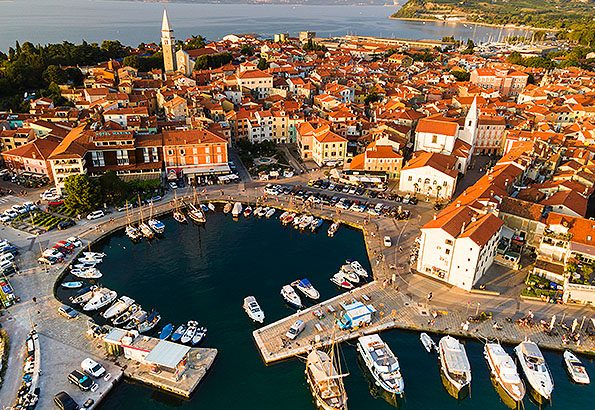

Utazás Szlovéniába
Augusztus első hetében Szlovéniába mentünk a családdal. Négy óra körül indultunk, hogy a délutánunkat már ott tudjuk tölteni.
Nyaralás
Szlovénia szép és tiszta volt, de két nap is inkább átmentünk Horvátországba. A szállásunk Izolában volt, ami egy csendes, tengerparti város.
 Séta IzolábanHazaút
Utolsó nap még fürödtünk a tengerbe, de négy-öt óra körül elindultunk haza.